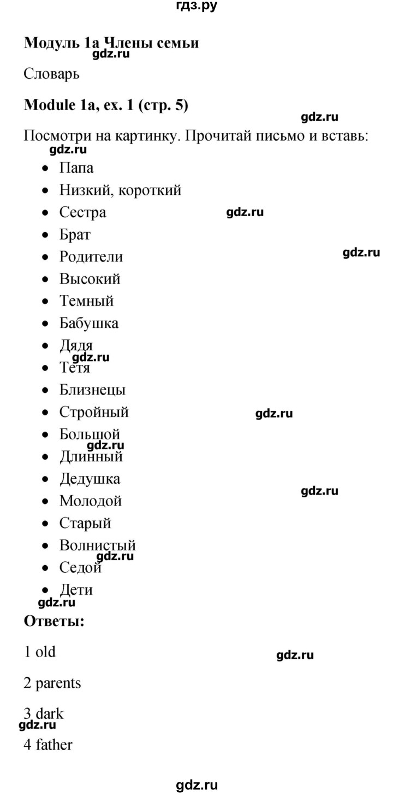

Полезное
Ответы на контрольные и проверочные по математике
Ответы на контрольные и проверочные по биологии
Ответы на контрольные и проверочные по английскому языку
График проведения промежуточных атистаций
График проведения ВПР
Задачник по физике
Домашние задания на 29 апреля
Домашние задания на 30 апреля
Домашние задания на 11 мая
География
параграф 27, р.т. стр.63-65 №1-5.
Ответы

Домашние задания на 12 мая
Aнглийский 1 группа
Словарный диктант модуль 9a b c отмеченые слова
Домашние задания на 15 мая
Музыка
Прослушать Реквием Кабалевского и Рождественского. Написать в тетради из скольких частей состоит это произведение. Ответить на вопрос какому историческому событию посвящено это произведение? Выписать в тетрадь эмоции и художественные образы,которые вас охватили после прослушивания.